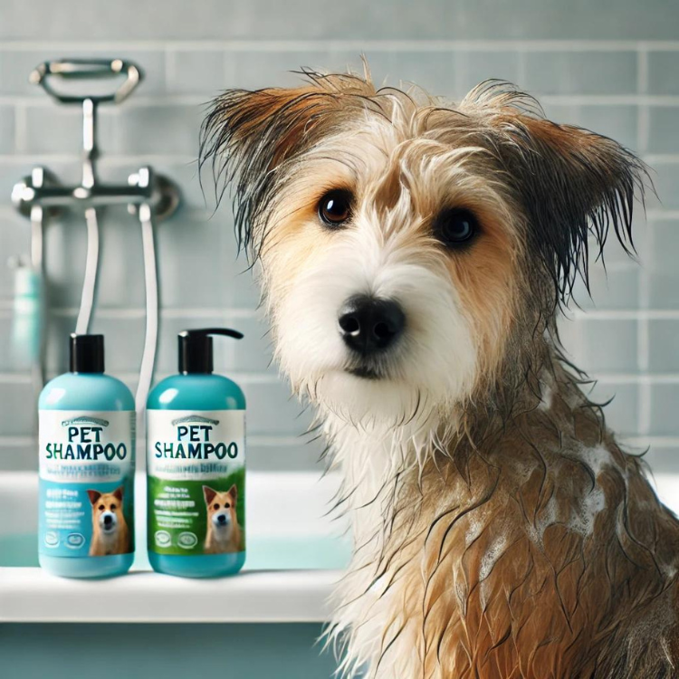

如何選擇最佳寵物洗髮精：保持寵物皮膚與毛髮健康的黃金守則

隨著越來越多的飼主選擇在家幫寵物洗澡，選擇合適的寵物洗髮精變得至關重要。從經濟實惠到高端產品，市面上有許多選擇，了解如何選擇合適的洗髮精對保持寵物的皮膚和毛髮健康至關重要。這篇指南將幫助你釐清寵物洗髮精的複雜性，確保你的毛孩得到最好的照顧。
為什麼選擇合適的洗髮精這麼重要？
選擇合適的洗髮精不僅僅是個人喜好問題，對於寵物的健康也至關重要。與人類洗髮精不同，寵物洗髮精是為滿足狗狗或貓咪的皮膚和毛髮需求而設計的。原因如下：
- 皮膚敏感性：寵物的皮膚比人類更敏感。選擇合適的洗髮精能避免刺激、乾燥和過敏反應。
- 毛髮健康：合適的洗髮精有助於保持毛髮光亮健康，減少掉毛和乾燥。
- 防止感染：有些洗髮精具有抗菌或抗真菌的特性，可保護寵物免受皮膚感染。
1. 選擇專為寵物設計的洗髮精
人類與寵物皮膚的差異
寵物的皮膚與人類的皮膚在pH值、厚度和敏感性方面有所不同。人類洗髮精的pH值通常在4.5到5.5之間，而寵物的皮膚更加中性，約為6.5到7.5。使用人類洗髮精會破壞寵物皮膚的天然油脂，導致刺激、脫屑和乾燥。
為什麼這很重要：
- pH值平衡：寵物洗髮精設計用來維持寵物皮膚的天然pH值。
- 皮膚健康：有助於防止乾燥、瘙癢和皮膚感染。
2. 避免有害成分
避免刺激物
有些洗髮精中的成分可能會對寵物的皮膚造成傷害。務必檢查標籤，並避免以下成分：
- 硫酸鹽：十二烷基硫酸鈉（SLS）和月桂醇聚醚硫酸鈉（SLES）會剝奪寵物皮膚的必要油脂，導致乾燥和刺激。
- 人工香精：這些可能引發過敏和皮膚反應。尋找含有天然、對寵物安全的香味成分，如薰衣草或燕麥的洗髮精。
- 人工色素：通常是多餘的，可能導致皮膚刺激。選擇無色素的洗髮精。
- 防腐劑：避免使用對羥基苯甲酸酯（Parabens）和甲基異噻唑啉酮（Methylisothiazolinone），這些成分可能會引發過敏反應。
- 酒精：高酒精含量會使寵物皮膚乾燥，造成不適。
3. 選擇含有有益成分的洗髮精
支持皮膚健康
為促進皮膚健康，選擇含有滋養與保護成分的洗髮精。可尋找以下成分：
- 神經醯胺：幫助維持皮膚屏障功能，保持滋潤並保護皮膚免受刺激物傷害。
- 燕麥與蘆薈：天然舒緩並滋潤寵物皮膚，對於敏感性寵物特別有益。
- 維他命B5（泛醇）：保濕並促進健康的毛髮。
神經醯胺的好處：
- 保持水分：幫助維持水合作用，保護皮膚免受環境損害。
- 皮膚屏障支持：增強皮膚的天然保護屏障。
4. 考慮香味敏感性
對氣味的敏感
雖然有香味的洗髮精聞起來很宜人，但過強的香氣可能會讓你的寵物感到不適。選擇輕柔、天然香味的產品，以確保寵物在洗澡時和之後都能感到舒適。
香味小技巧：
- 淡雅的香味：選擇帶有洋甘菊或薰衣草等自然香味的洗髮精。
- 寵物的舒適感：避免過於濃烈的香味，以免造成壓力或刺激。
總結
選擇寵物洗髮精時，應優先考慮pH平衡的產品，避免有害化學成分，並選擇含有有益成分如神經醯胺和維他命B5的洗髮精。通過選擇合適的洗髮精，你可以保護寵物的皮膚與毛髮，確保牠們保持健康與舒適。
蝦皮 產品推薦
1. 寵物沐浴露 立即購買
不同品項分別含有荷荷巴油,薄荷精油，甜杏仁油，EV橄欖油，美毛因子，氨基酸，葡萄籽精華，蘆薈等。這些成分作為寵物沐浴乳中的添加物，各有其獨特的優點，能有效改善寵物皮膚和毛髮的健康。以下是它們的具體優點：
- 荷荷巴油：荷荷巴油與皮膚天然油脂相似，有助於保持皮膚的水分，防止乾燥和脫屑。且它具有抗炎特性，有助於舒緩敏感或受刺激的皮膚。
- 薄荷精油：薄荷精油能提供清涼的感覺，對於容易發熱或發癢的皮膚有舒緩效果。且有助於驅除跳蚤、蝨子等害蟲。
- 甜杏仁油：甜杏仁油富含維生素E，能滋養皮膚並使毛髮柔軟有光澤，適合乾燥皮膚和毛髮。且對敏感皮膚有溫和的保護效果，適合有皮膚問題的寵物。
- EV橄欖油（初榨橄欖油）：橄欖油含有豐富的抗氧化劑，能深層保濕並促進皮膚健康。且橄欖油中的成分有助於預防和治療皮膚感染。
- 美毛因子：促進毛髮健康：美毛因子通常是特定的蛋白質或維他命複合物，能促進毛髮的強韌與光澤，減少毛髮打結和掉毛。且有助於加速毛髮的生長，使毛髮看起來更豐盈。
- 氨基酸：氨基酸是毛髮蛋白質的重要組成部分，能幫助修復受損的毛髮，增強毛髮的強度與彈性。且能幫助毛髮和皮膚保濕，維持柔軟與健康的狀態。
- 葡萄籽精華：葡萄籽富含抗氧化劑，有助於保護皮膚免受自由基的損害，促進健康的皮膚細胞更新。且對抗發炎反應，適合易過敏的寵物。
- 蘆薈：蘆薈能即時舒緩發炎或受損的皮膚，同時具備卓越的保濕效果。且對於有皮膚傷口或輕微擦傷的寵物，蘆薈能促進癒合過程。
2. 日本KOJIMA 寵物濕巾 立即購買
此款為日本KOJIMA品牌方監督並授權給大陸天津藥業公司製造，是通過執行標準、檢驗合格、為寵物量身打造的專業品牌。而寵物在日常生活中時刻都需要濕巾，像是淚痕、出門後腳爪髒、耳朵有垢、便後、飯後擦嘴，而更是不能用人類的濕巾代替，此時寵物濕巾就相當重要。
Amazon 產品推薦
這裡有一些來自亞馬遜的推薦產品，幫助你做出明智的選擇。這些鏈接可能包含聯盟行銷計劃，透過點擊並購買，我們可能會獲得一小部分佣金（對你不會產生任何額外費用），幫助我們維持網站的運營。
1. Arm & Hammer 超級除臭狗狗洗髮精 立即購買
- 除臭功能：含有小蘇打，天然去除異味。
- 保濕效果：含有黃瓜薄荷，滋潤皮膚。
- pH平衡：專為狗狗皮膚設計，防止刺激。
- 淡雅香味：來自天然來源的奇異果花香。
2. Wahl 美國品牌 乾燥皮膚與止癢寵物洗髮精 立即購買
- 燕麥配方：有助於舒緩乾燥、癢感的皮膚。
- 過敏友好：不含酒精、防腐劑和人工色素。
- 經濟實惠：高濃度成分，少量即可達到效果。
- 獸醫推薦：專為敏感皮膚的寵物設計。
3. Wahl 美國品牌 4合1 寵物洗髮精 立即購買
- 4合1配方：清潔、護髮、去毛結、保濕。
- 舒緩香味：薰衣草與洋甘菊香味，幫助安撫焦慮的寵物。
- 安全成分：pH平衡，無有害添加物。
更多文章